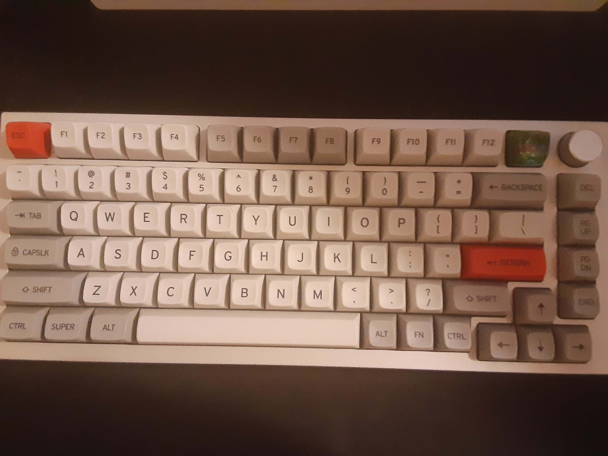
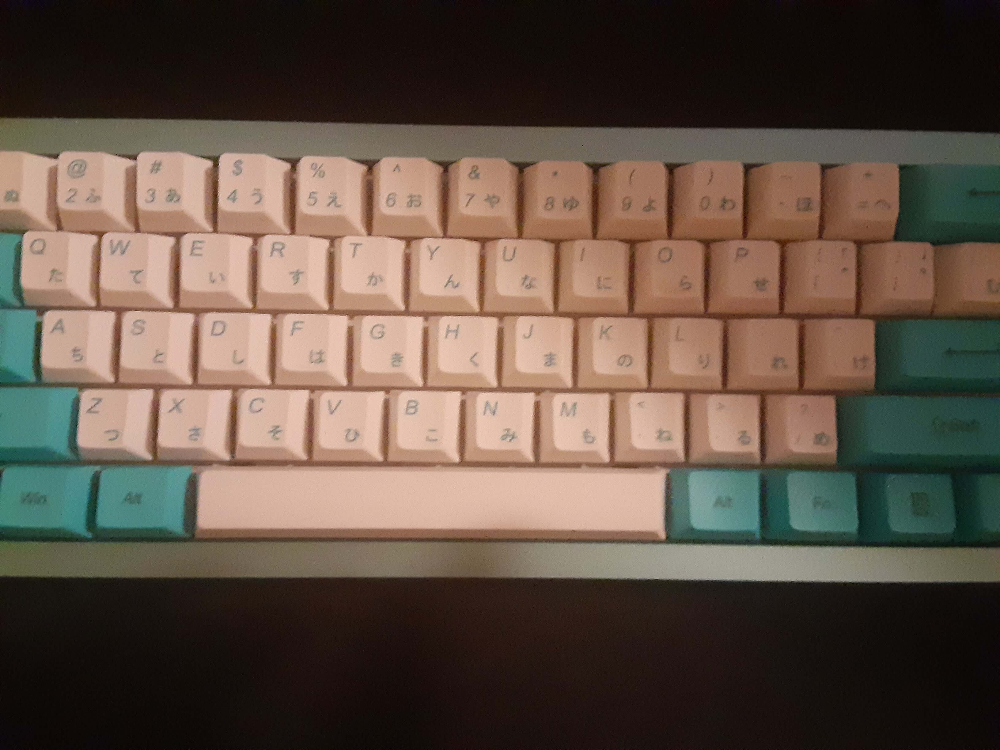
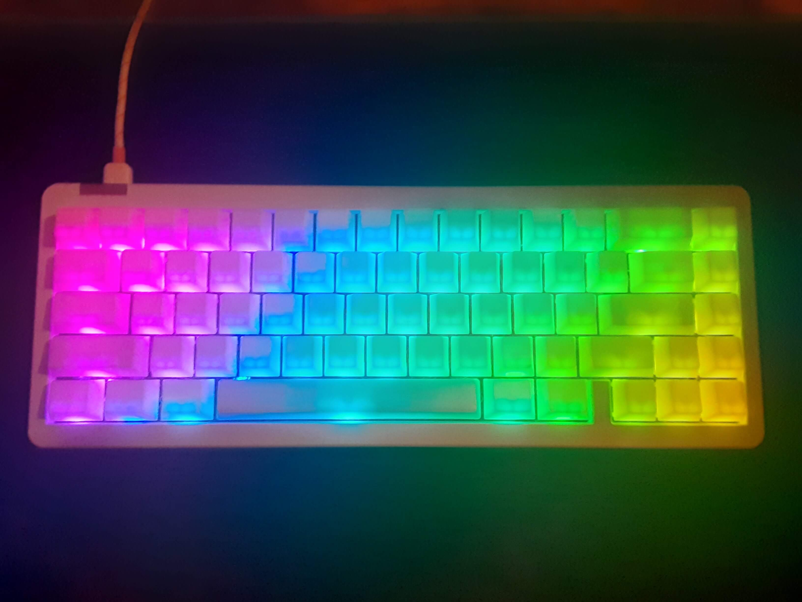

<div id="extraInfoContainer">


<mat-accordion multi>
    <mat-expansion-panel>
        <mat-expansion-panel-header>
            Relevant Courses Taken in College
        </mat-expansion-panel-header>
        <ul>
            <li>Internet Foundation (HTML/CSS)</li>
            <li>Computer Networks (Basics of Networking)</li>
            <li>Programming Logic (Java)</li>
            <li>Linux Administration</li>
            <li>Database Concepts and Applications 1 and 2(SQL)</li>
            <li>Object-Oriented Programming 1 and 2 (Java)</li>
            <li>Web Scripting (Javascript)</li>
            <li>Python Programming</li>
            <li>System Administration Scripting (Powershell)</li>
            <li>C# Programming</li>
            <li>Mobile Application Development (Android Studio)</li>
            <li>Software Testing (Selenium)</li>
            <li>Information Technology Project Management</li>
            <li>Business Systems Analysis</li>
            <li>Advanced Web Development (PHP)</li>
            <li>Capstone Project (self-learned REACT for front-end, PHP for back-end)</li>
        </ul>
    </mat-expansion-panel>
    <mat-expansion-panel>
        <mat-expansion-panel-header>
            Experience at my internship
        </mat-expansion-panel-header>
        <p class="tab">
            My internship at Rural Sourcing was one of the most amazing and educational experiences I have ever been apart of.
              I gained valuable experience in software development and the .NET ecosystem, and explored a range of technologies such as EntityFramework, ASP.NET Web API, xUnit, FluentValidation, and Swagger.
              I also gained valuable experience in using Jira and Git as collaborative tools with my team of interns, which further enhanced my knowledge of software development practices and teamwork.
              We also did the scrum ceremonies of sprint planning, daily stand-up, sprint review, and sprint retrospective to help turn requirements into concrete actions.
              We did one week sprints to consistently practice the scrum ceremonies every week.
              I was fortunate to be assigned a variety of tasks, during these one week sprints which gave me experience in all the technologies.
              Before this internship, I questioned whether I was ready for the workload required in a real-world software development position.
              Thanks to this internship experience, I now feel confident in my ability to learn new technologies and integrate valuable fixes and features into a software development project.
        </p>
    </mat-expansion-panel>
    <mat-expansion-panel>
        <mat-expansion-panel-header>
            Things I'm currently Learning
        </mat-expansion-panel-header>
        <ul>
            <li>Unreal Engine (Udemy Course, copyrighted so cannot put on a public GitHub)</li>
            <li>PortSwigger's Academy (Pentesting)</li>
            <li>CompTIA Security+ (https://www.youtube.com/watch?v=9Hd8QJmZQUc)</li>
            <li>Japanese xD</li>
            <li>AWS or Azure(since I like C#)</li>
        </ul>
        <p>Projects I want to work on to Learn new things</p>
        <ul>
            <li><s>This Personal Website</s></li>
            <li><s>Add unique Javascript / CSS section to practice web design</s></li>
            <li><s>Create a Clean Archiecture Template for a backend (C# + .NET Web API + SQL Server + EntityFramework</s>)</li>
            <li><s>Parse a Japanese to English Dictionary to fill Database with data - (C#)</s></li>
            <li><s>Make a notecard application using this data (set of set of notecards)</s></li>
            <li>
                Make a notecard desktop app for Linux that makes it easy to make a notecard
                <ul>
                    <li>When browsing web, sometimes I learn I misrememberd, and want to create notecards to help remember</li>
                    <li>Sets a timer and currect correct streak for each card</li>
                    <li>Uses long term memory research to set timer for correct streak</li>
                    <li>This would be a system alot like the website WaniKuni but instead of learning Kanji(Japanese), it is more custom</li>
                </ul>
            </li>
            <li>Remake this site using Angular (currently working on)</li>
            <li>
                Learn how the wallpaper engine KDE plugin works
                <ul>
                    <li>Make a plasmoid that shows the pic/wallpaper to understand first step of how the wallpapers work</li>
                </ul>
            </li>
        </ul>
    </mat-expansion-panel>
    <mat-expansion-panel>
        <mat-expansion-panel-header>
            My Custom Keyboards
        </mat-expansion-panel-header>
        <div class="keyboardContentDiv">
            <!--12 by 9-->
            <div class="kbpicDivContainer">
                
            </div>
            
            <ul class="keyboardContentList">
                <li>Case: GMMK Pro</li>
                <li>Switch: Anubis</li>
                <li>Keycaps: Drop + Matt30 MT3 /dev/tty</li>
                <li>Stabilizers: Durock V2</li>
            </ul>
        </div>
        <hr>
        <div class="keyboardContentDiv">
            <div class="kbpicDivContainer">
                
            </div>
            
            <ul class="keyboardContentList">
                <li>Case: Brutal60 Aqua</li>
                <li>Switch: Beapolitan Ice Cream Tactile Switch</li>
                <li>Keycaps: Cherry Profile Blue and White Japanese PBT</li>
                <li>Stabilizers: Durock V2</li>
            </ul>
        </div>
        <hr>
        <div class="keyboardContentDiv">
            <div class="kbpicDivContainer">
                
            </div>
            
            <ul class="keyboardContentList">
                <li>Case: IDOBAO ID67</li>
                <li>Switch: Gateron KS-3 Milky Yellow Pro</li>
                <li>Keycaps: POM Jellies</li>
                <li>Stabilizers: Durock V2</li>
            </ul>

        </div>
    </mat-expansion-panel>
    
</mat-accordion>
</div>

